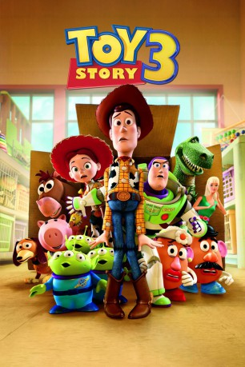

 
 IMDB-Wertung: 8.3 / 10
IMDB-Wertung: 8.3 / 10  IMDB-TOP-Platzierung: 104
IMDB-TOP-Platzierung: 104  Metascore:
Metascore: 
In Toy Story 3 ist Andy, dem die Spielzeuge gehören, dem Kindesalter endgültig entwachsen und seine Spielsachen werden bei einem Kinderhort abgegeben. Zunächst froh, dass wieder mit ihnen gespielt wird, merken der Spielzeug-Cowboy Woody, Space Ranger „Buzz Lightyear“, Herr Kartoffelmann und Co. In Toy Story 3 schnell, dass sie von hier flüchten müssen, wenn sie unter den patschigen Kinderhänden nicht ihr Leben verlieren wollen. Also planen sie gemeinsam mit neu gefundenen Spielzeugfreunden ihren Ausbruch…
Jahr: 2010
Dauer: 103 Minuten
FSK: 0
Land: USA Studio: Walt Disney Studios Motion PicturesTonspuren:
Untertitel:
Auflösung: 1080p (1920x1080) Größe: 8038 MB
Genre: Komödie, Abenteuer, Fantasy, Animation/Trick, Familie
Regisseur: Lee Unkrich
Drehbuch: John Lasseter, Andrew Stanton, Lee Unkrich, Michael Arndt
Soundtrack: Randy Newman
Darsteller:
 Tom Hanks als Woody
Tom Hanks als Woody Tim Allen als Buzz Lightyear
Tim Allen als Buzz Lightyear Joan Cusack als Jessie
Joan Cusack als Jessie Ned Beatty als Lotso
Ned Beatty als Lotso Don Rickles als Mr. Potato Head
Don Rickles als Mr. Potato Head Michael Keaton als Ken
Michael Keaton als Ken Wallace Shawn als Rex
Wallace Shawn als Rex John Ratzenberger als Hamm
John Ratzenberger als Hamm Estelle Harris als Mrs. Potato Head
Estelle Harris als Mrs. Potato Head John Morris als Andy
John Morris als Andy Jodi Benson als Barbie
Jodi Benson als Barbie Emily Hahn als Bonnie
Emily Hahn als Bonnie Laurie Metcalf als Andy's Mom
Laurie Metcalf als Andy's Mom Blake Clark als Slinky Dog
Blake Clark als Slinky Dog Teddy Newton als Chatter Telephone
Teddy Newton als Chatter Telephone Bea Miller als Molly
Bea Miller als Molly Timothy Dalton als Mr. Pricklepants
Timothy Dalton als Mr. Pricklepants Lori Alan als Bonnie's Mom
Lori Alan als Bonnie's Mom Kristen Schaal als Trixie
Kristen Schaal als Trixie Jeff Garlin als Buttercup
Jeff Garlin als Buttercup Bonnie Hunt als Dolly
Bonnie Hunt als Dolly John Cygan als Twitch
John Cygan als Twitch Jeff Pidgeon als Aliens
Jeff Pidgeon als Aliens Whoopi Goldberg als Stretch
Whoopi Goldberg als Stretch R. Lee Ermey als Sarge
R. Lee Ermey als Sarge Richard Kind als Bookworm
Richard Kind als Bookworm Erik von Detten als Sid
Erik von Detten als Sid Carlos Alazraqui als Additional Voice
Carlos Alazraqui als Additional Voice Teresa Ganzel als Additional Voice
Teresa Ganzel als Additional Voice Jess Harnell als Additional Voice
Jess Harnell als Additional Voice Laraine Newman als Additional Voice
Laraine Newman als Additional Voice Colleen O'Shaughnessey als Additional Voice
Colleen O'Shaughnessey als Additional Voice Bob Peterson als Additional Voice
Bob Peterson als Additional Voice Sherry Lynn als , uncredited
Sherry Lynn als , uncredited Jim Ward als , uncredited
Jim Ward als , uncredited Frank Welker als Bullseye / Buster / The Monkey / Pigeon , uncredited
Frank Welker als Bullseye / Buster / The Monkey / Pigeon , uncredited Jack Angel als Chunk
Jack Angel als Chunk Jan Rabson als Sparks
Jan Rabson als SparksDatei: X:\Kinder Disney HD\Toy Story\Toy Story 3 (2010, FSKo.Al., 1920x1080) 3D.mkv seit 02.03.2015
Festplatte: Kinder-Filme+Trick
 Es gibt insgesamt 13 Filme in der Gruppe 'Kinder Disney HD\Toy Story'
Es gibt insgesamt 13 Filme in der Gruppe 'Kinder Disney HD\Toy Story'